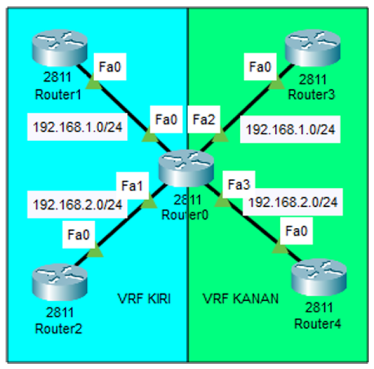

VRF Lite
VRF Lite (Virtual Routing and Forwarding Lite) enables multiple virtual routing tables on a single router without requiring MPLS, allowing for network segmentation and secure, isolated routing domains within the same physical infrastructure.
